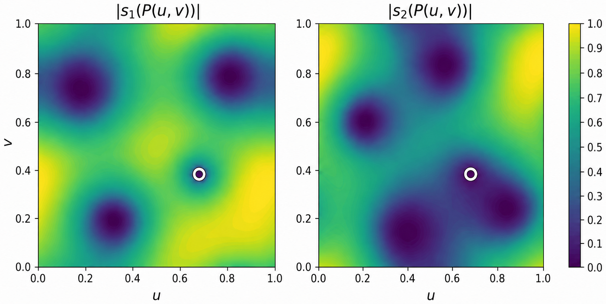

Formalizes in Lean 4 a criterion on lattices for which no Schwartz-class function generates a Gabor frame.
Abstract
For every dimension $d > 1$, we establish explicit criteria on lattices $Λ\subset \mathbb{R}^{2d}$ with density $D(Λ) > 1$ such that no function with a continuous Zak transform generates a Gabor frame along $Λ$. In particular, this gives a negative answer to the existence problem of Gabor frames with window functions in the Schwartz space, the Feichtinger algebra, and the Fourier-invariant Wiener space. Our result is based on a characterization of when a collection of quasiperiodic functions admits a common zero, which may be of independent interest. We also include a formalization of our main result in Lean 4.
Problem
For dimensions d > 1, it is unknown which lattices admit regular Gabor frames with smooth window functions.
Approach
The authors characterize when a collection of quasiperiodic functions has a common zero, then apply this to show explicit lattice criteria under which no function with continuous Zak transform can generate a Gabor frame. The main theorem is formalized in Lean 4.

Figure 1. Visualization of Theorem 1.3 in the case d=N=2 . The figure shows the heatmap of two quasiperiodic functions s_{1},s_{2}:{\mathbb{R}}^{4}\to{\mathbb{C}} on the intersection of the 4-cube [0,1]^{4} with the plane \mathcal{P} , parametrized by P:{\mathbb{R}}^{2}\to{\mathbb{R}}^{4} with P(u,v)=(u,v,v,1-u) . The functions s_{1} and s_{2} are chosen as products of the theta function \vartheta
Results
Negative answer to the existence problem for Gabor frames with windows in the Schwartz space, Feichtinger algebra, and Fourier-invariant Wiener space.